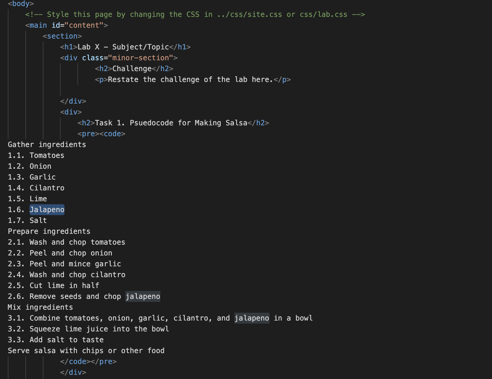
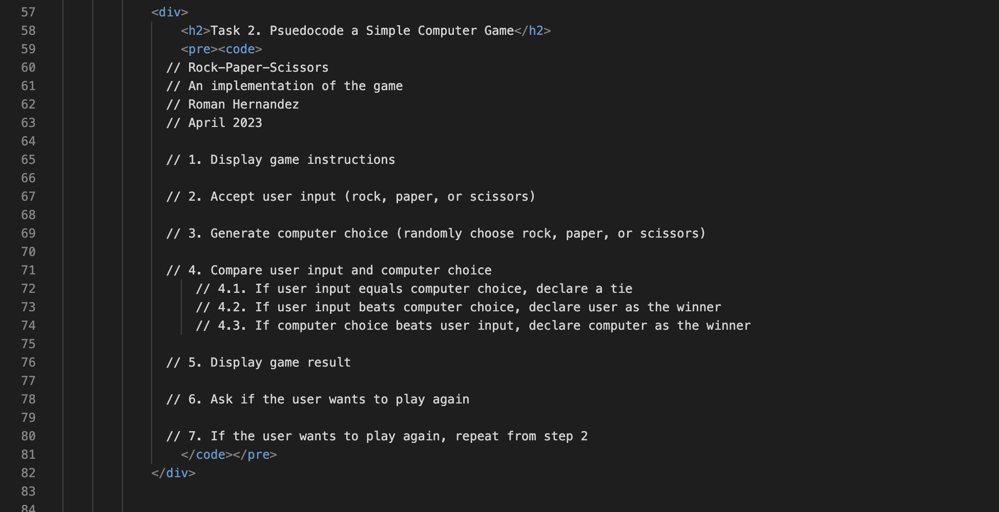

Lab 4 - Psuedocode
Challenge
Using Psuedocode.
Task 1. Psuedocode for Making Salsa

Gather ingredients
1.1. Tomatoes
1.2. Onion
1.3. Garlic
1.4. Cilantro
1.5. Lime
1.6. Jalapeno
1.7. Salt
Prepare ingredients
2.1. Wash and chop tomatoes
2.2. Peel and chop onion
2.3. Peel and mince garlic
2.4. Wash and chop cilantro
2.5. Cut lime in half
2.6. Remove seeds and chop jalapeno
Mix ingredients
3.1. Combine tomatoes, onion, garlic, cilantro, and jalapeno in a bowl
3.2. Squeeze lime juice into the bowl
3.3. Add salt to taste
Serve salsa with chips or other food
Task 2: Psuedocode a Simple Computer Game

// Rock-Paper-Scissors
// An implementation of the game
// Roman Hernandez
// April 2023
// 1. Display game instructions
// 2. Accept user input (rock, paper, or scissors)
// 3. Generate computer choice (randomly choose rock, paper, or scissors)
// 4. Compare user input and computer choice
// 4.1. If user input equals computer choice, declare a tie
// 4.2. If user input beats computer choice, declare user as the winner
// 4.3. If computer choice beats user input, declare computer as the winner
// 5. Display game result
// 6. Ask if the user wants to play again
// 7. If the user wants to play again, repeat from step 2
Problems
learnng to use comments to design future code
Reflection
This assignment was essential to learn, as it is important for future code